A Forest Fire Model in 1, 2, and 3 Dimensions

Note: This post was originally a short technical article I shared on the Wolfram Community forum. For an interactive experience with live demonstrations or to download this text and source code as a Wolfram Notebook, please visit the original post here.
Introduction
The forest fire model is one of the simplest computational models to display self-organised criticality. The model is a probabilistic cellular automaton with the following rules. At each computation/time step:
- Trees on fire burn down, leaving wasteland.
- Trees catch fire if they are adjacent to at least one tree already on fire.
- Tree cells catch fire independently with probability P(f)
- Trees grow in wasteland cells with probability P(t)
We'll use the following values for the possible cell states:
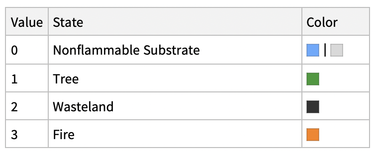
Here is a visualisation of the fire-spreading process in two-dimensions, with P(t) and P(f) set to 0:
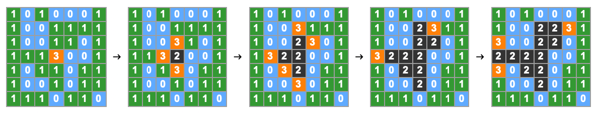
In the implementation that follows, the forestFireStep function computes simulation steps. P(f) is specified using the option "NewFireProb", and P(t) with "NewTreeProb". I have introduced the two additional (optional) terms "MaxNewFires" and "MaxNewTrees", allowing the user to specify the maximum numbers of new fires and trees per step in addition to the probabilities of spontaneous ignition and new tree growth. This allows for more intuitive and varied system setups.
Implementation: Forest Fire Functions
Retrieve the positions of trees, actively burning fires, and wasteland:
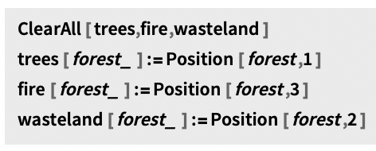
Retrieve the positions of trees adjacent to actively burning fires in the landscape:
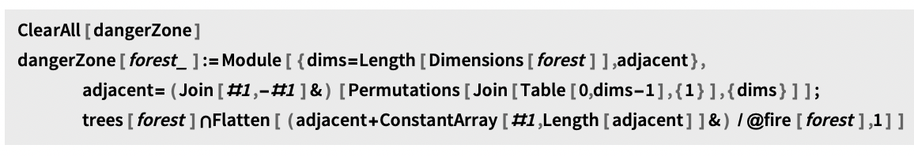
Compute a forest fire simulation step:
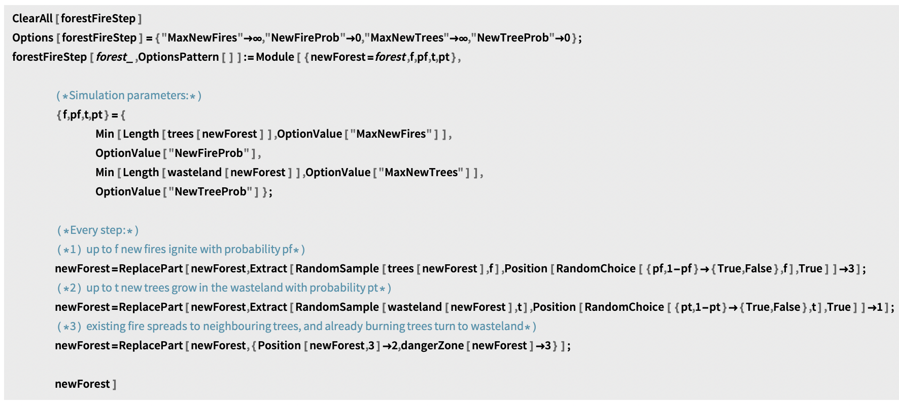
Performing Forest Fire Simulations
Given an array defining the initial state of a landscape, the forestFireStep function returns the state of the landscape at the following time step. We'll see in a moment that it is flexible enough to be used to perform simulations in one, two, and three dimensions.
Forest Fires on 2D Arrays
Generate some forests:
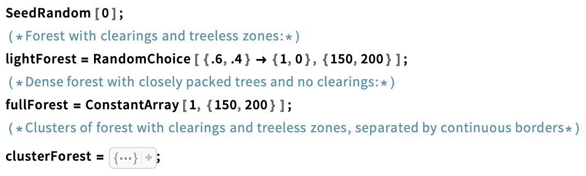
Compute a single step of a forest fire simulation on a 2D array:
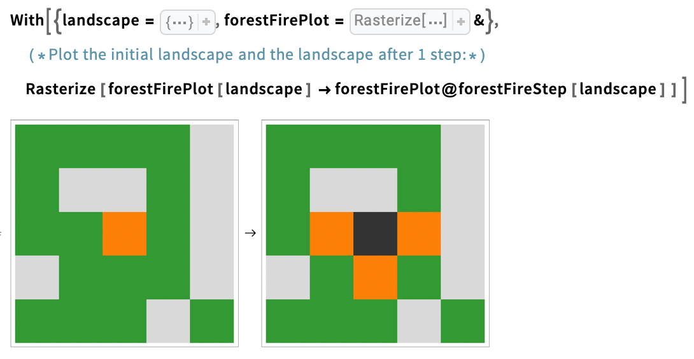
You can specify the probabilities that tree cell spontaneously will catch fire, or that a wasteland cell will grow a tree with the "NewFireProb" and "NewTreeProb" options. Likewise, you can specify the maximum number of new fires or trees per step by specifying the options "MaxNewFires" and "MaxNewTrees".
Compute and animate 200 steps of a forest fire trajectory in a light forest with gaps and clearings:
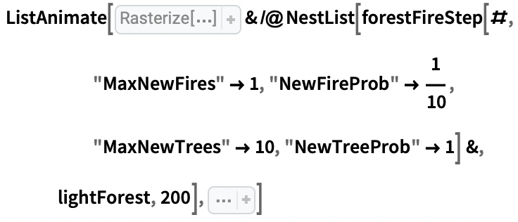

By default, “MaxNewFires” and “MaxNewTrees” are set to ∞. When this is the case, the occurrence of new fires or trees is determined entirely by the “NewFireProb” and “NewTreeProb” options.
Compute and animate 200 steps of a forest fire trajectory on a partitioned landscape:
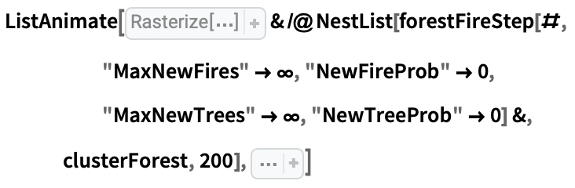

Compute and animate 200 steps of a forest fire trajectory exhibiting self-organised criticality:
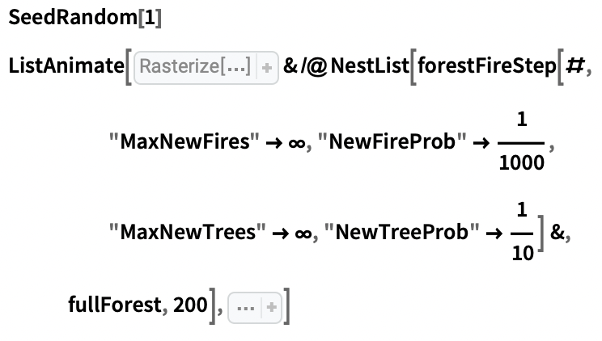

Produce time-series and phase space plots for the trajectory above:
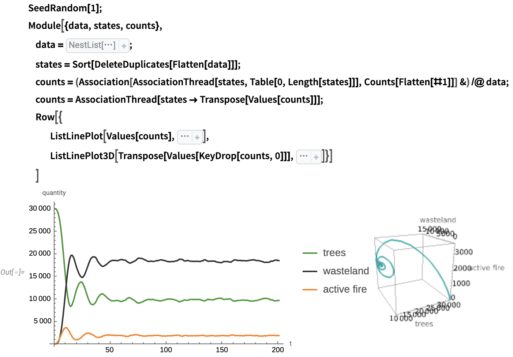
One-Dimensional Forest Fires
We can apply the forest fire rules to one dimensional arrays as we would apply them in two dimensions. Rather than spreading to adjacent cells in two spatial dimensions, then, fires only spread along one.
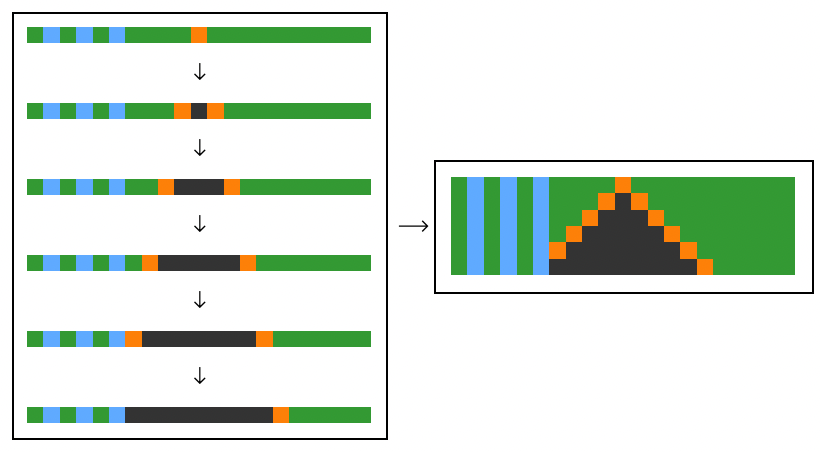
See some one dimensional trajectories in the animation below, or head to the original post to see an interactive example:
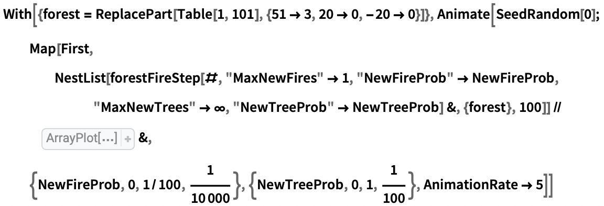

Forest Fires in 3D
In three dimensions, we can also define forested landscapes with more complicated topographies, for example, by layering different cell types.
The following example is of a forested layer on top of a layer of soil. Both layers vary in thickness (check out the original post for the interactive version).
Three-dimensional forest fire model trajectories through a dense hilly forest.
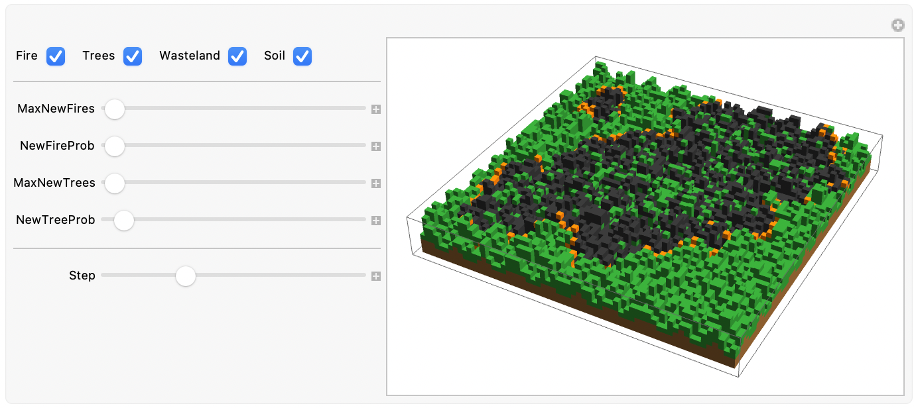
Depending on the forest initial configuration, it can be difficult to visualise all cell states at once. This is the case for forest fire trajectories through dense volumes of trees, for example:
Three-dimensional forest fire model trajectories through a cubic forest:
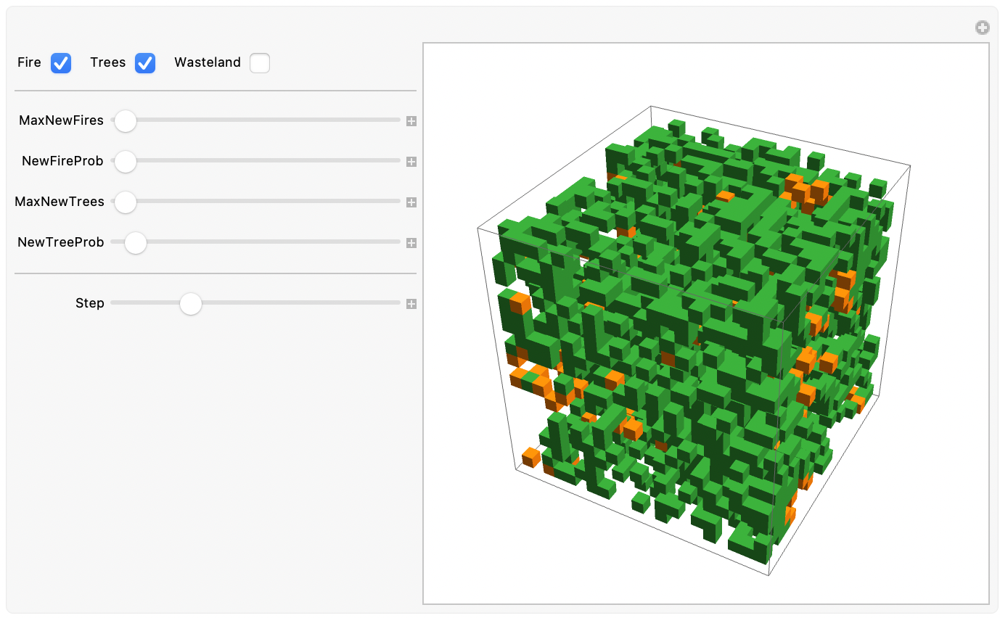
Closing Note
I hope you found these examples interesting and entertaining! The implementation discussed in this short text should in principle work for higher than 3-dimensional arrays but I have not tested it for such cases. If you do, please make sure to share your results in the comment section under this post. In fact, please feel free to share any interesting behaviours you find or modifications you make in the comments! I look forward to hearing your ideas and suggestions!
Sources
- 'Forest-Fire Model'. In Wikipedia, 18 August 2023.
- E, C. 'Answer to "Can You Apply the Cellular Automata Function to a Grid Containing Numbers?"' Mathematica Stack Exchange, 5 January 2014.
- Bak, Per, Kan Chen, and Chao Tang. 'A Forest-Fire Model and Some Thoughts on Turbulence'. Physics Letters A 147, no. 5 (16 July 1990): 297\[Dash]300.